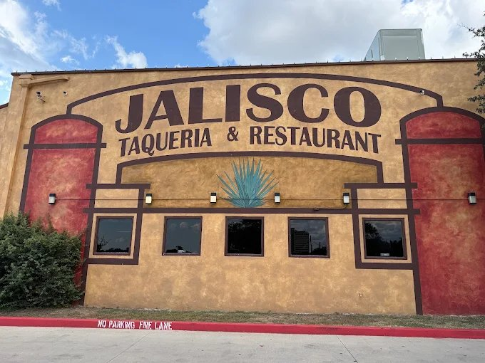
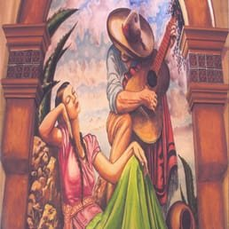
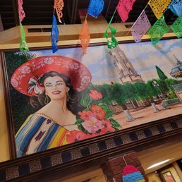
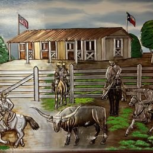
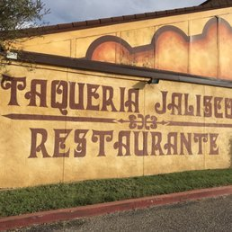
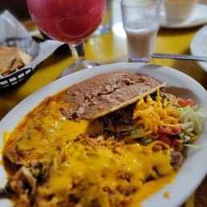
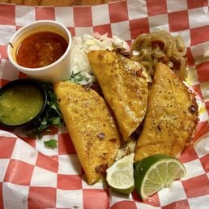
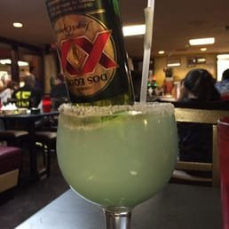
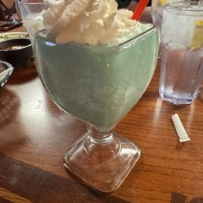

JALISCO
The same wall has said this since before most of our regulars were born. The food hasn't changed either.

Four walls, four stories.
None of this was commissioned as "branding." It's paint on the actual walls of the actual restaurant — a serenade, a portrait of a woman in front of Guadalajara's skyline, papel picado strung for real, and a Texas ranch scene that says as much about Lubbock as it does about Jalisco.
A guitar, an archway, agave either side.
Painted in the same folk-art hand as the facade sign outside — the arch motif shows up again here, framing the figures the way the building frames its own doorway.

Guadalajara, strung with paper.
The papel picado you see here isn't a graphic — it's actually strung across the dining room, photographed exactly as it hangs.

Jalisco met West Texas here.
A barn, a Texas flag, longhorns — this is the one wall no "generic Mexican restaurant" template would ever paint. It's specific to being a Jalisco family's restaurant on Avenue Q in Lubbock, not anywhere else.

Even the lettering is hand-painted twice.
A second sign, a different wall, the same dark-brown hand — this one in an old-west wanted-poster serif instead of the facade's bolder capitals.

Portioned for regulars, not photographs.
Combo plates, not tasting portions — cheese-smothered enchiladas, rice, beans, and whatever came off the grill that made the plate next to it look plain.

Crispy tacos, made to order
The Dos Equis margaritaStraight from Google.
Oh my goodness, I'm from Oklahoma. I wish i could come back often, the restaurant was so clean! My waitress was perfect, didn't check on me too much didn't disappear too long! Every thing was so prompt! The water was so clean n tasty, lemon was fresh, the steak tacos were large and full of flavor, avocado was fresh. Probably the best I've had in A VERY LONG TIME!! you know they're good when they have huge parking and extra parking across the street! I will be back one day!!! Keep up the good work!!!!
This place is outrageously good. I was concerned when I drove up that it was going to be too busy, but even though there was a ton of people. There this place has run so well and managed so efficiently We had absolutely no trouble being served and the food came up fast. The meat and the tacos were excellent and I got the caldo de 7 mares and I'm still dreaming about that broth. If there was so much seafood in there and the food was such high quality. We also tried the Nepal's they were excellent and Made with care. They were a little too salty for my taste but they were so good. I ate them all. Made with care. The prices were excellent, so you get this outstanding five-star food at an incredibly good value. I highly recommend this place. It helped me fall in love with Lubbock

Very clean, delicious Mexican plates! Asap i arrive, beautiful girls greeted me very friendly and nice, waitress amazing and very fast with my order. Steak was cooked perfectly, guacamole fresh. I came by myself at 3pm not busy, bachata music and reguetton music, not just mexican music. Really enjoyed my visit, they even put my drink to go.